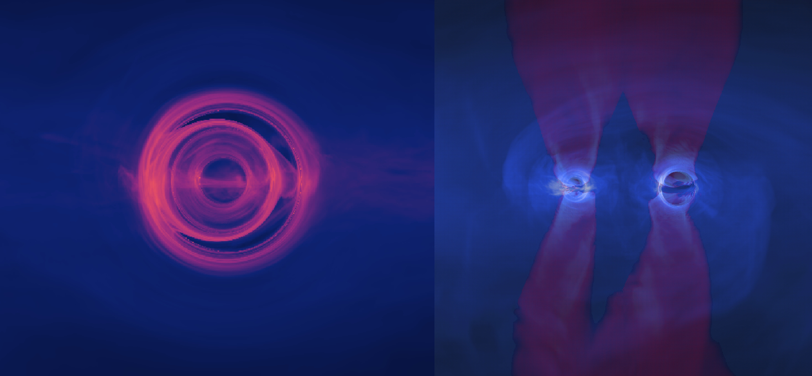

Electromagnetic emission from supermassive black hole binaries approaching merger

When two galaxies merge, the supermassive black holes at their nuclei might end up forming close binary systems of sub-parsec scales. The gravitational waves emitted by these systems are targets of current Pulsar Timing Arrays and of future interferometers such as LISA.
Unlike most stellar-mass black hole mergers, supermassive black hole binaries live and die in gas-rich environments and can present similar phenomenology to single AGNs; namely, accretion disks, jets and the subsequent multi-wavelength emission.
By combining GRMHD simulations with semi-analytical modeling, I investigate how supermassive black hole binaries imprint unique electromagnetic signatures on their surrounding plasma. Recognizing these signatures will be key to distinguishing them from normal AGNs and to unlocking the full scientific return of the forthcoming multimessenger era.